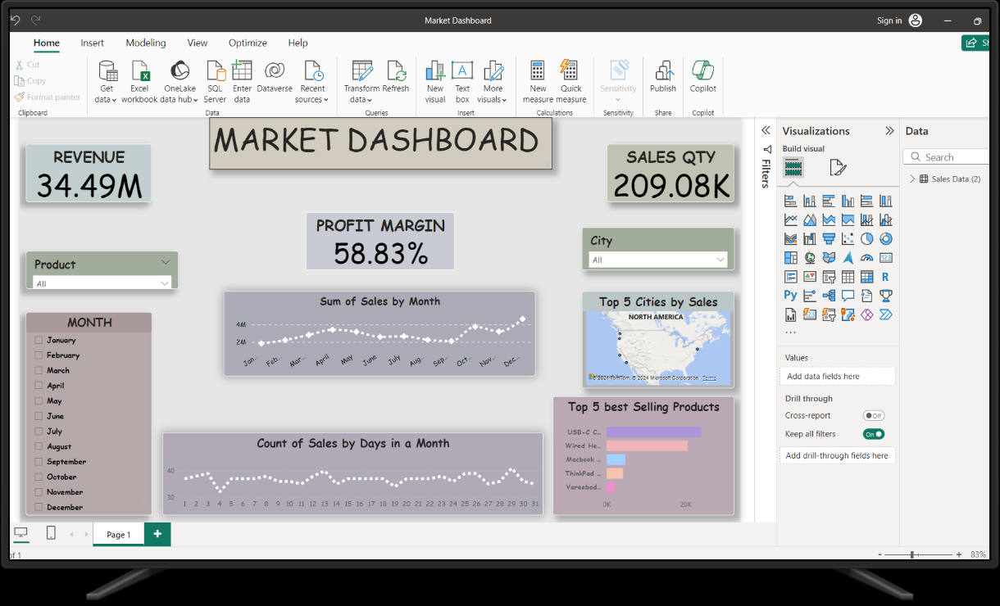
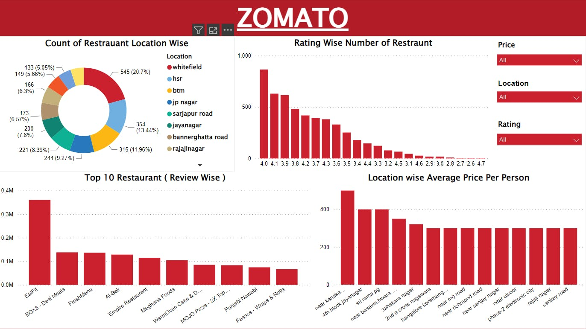
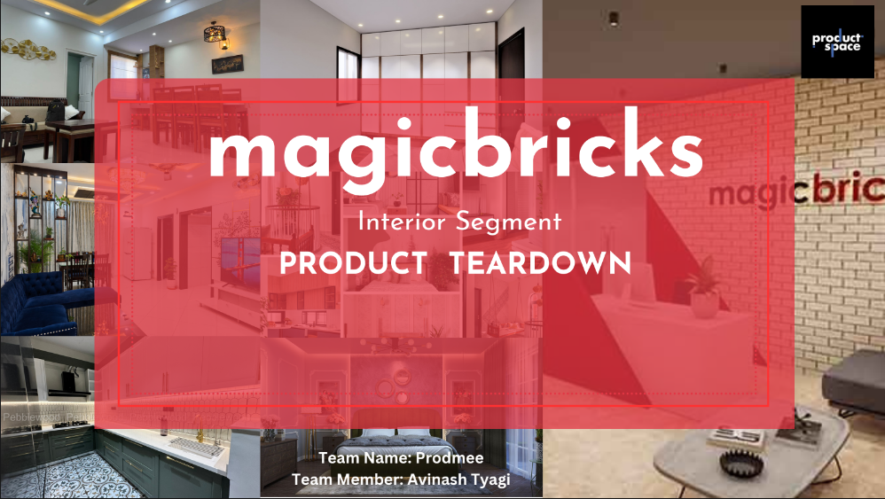

Data Analysis using Python, SQL, Power BI
From raw data, cleaning and preprocessing ensure accuracy. SQL and Python are used for exploratory analysis. Finally, interactive visualizations are created in Power BI, turning data into actionable insights for informed decision-making.


Executed SQL analyses to extract and interpret pizza market data for business decision-making. Key tasks included calculating total orders, revenue, and identifying top-selling pizzas by size and quantity. Intermediate work involved assessing category-wise orders and hourly distributions. Advanced analyses focused on revenue contributions and cumulative trends, providing deep insights into performance.

Evaluated platform features, user experience, and overall value proposition within the interior design realm.
Drawing from market research and user feedback, offered astute recommendations to augment platform effectiveness
and user satisfaction. The project served as a significant learning opportunity, honing their skills in product analysis
and strategic planning for future endeavors.

Analyzed market data to identify trends, top-selling products, and revenue metrics for business decision-making. Key insights included month-wise and weekdays-wise total sales, top 5 products by quantity ordered and sales, city-wise market performance, and interactive visualizations to enhance data interpretation.
Developed a sustainable organic detergent for the INR 42,827.4 crore Indian detergent market (2019), projected to reach
INR 73,660.4 crore by 2027. Conducted thorough sustainability assessments, enhancing environmental performance and
market presence. Positioned product as top choice for health-conscious consumers, aligning with eco-friendly trends.

Utilize SQL queries to explore a music playlist database, addressing key business questions on genre popularity, revenue trends, top customers, and sales insights. Develop SQL querying, data manipulation, and analytical skills to deliver actionable insights through query results, a detailed report, and optional visualizations.
Conducted an in-depth analysis of the semiconductor industry for Tata Group, focusing on market trends and opportunities. Developed strategic insights to guide Tata’s entry into semiconductor manufacturing. Delivered actionable recommendations that aligned with Tata’s business objectives. Supported the company’s decision-making process with data-driven insights.